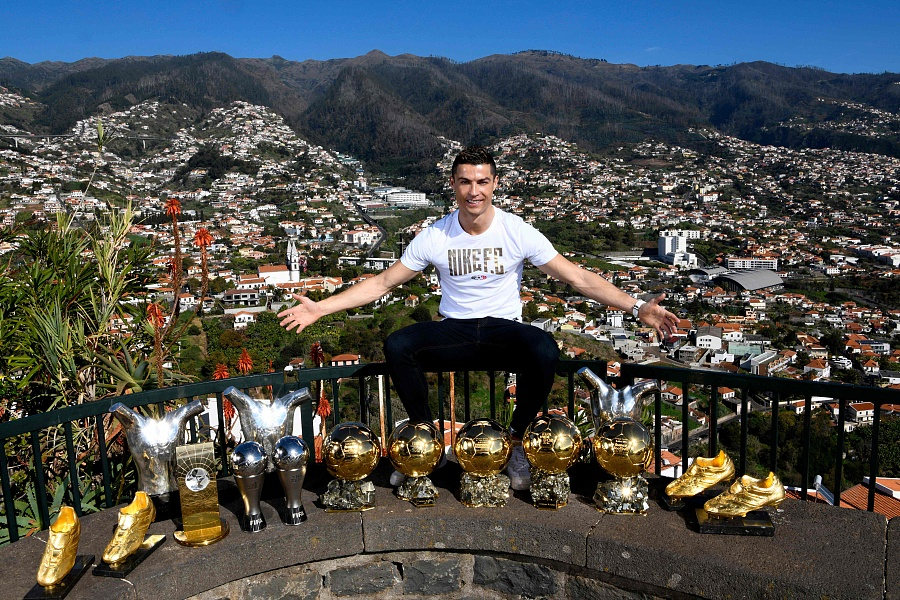

Cristiano Ronaldo: A Tribute to a Football Legend
Welcome to our tribute web page dedicated to one of the greatest football legends of our time, Cristiano Ronaldo. With a career that has redefined excellence and shattered records, Ronaldo's journey from a young talent in Madeira, Portugal, to an international icon is a testament to his unparalleled skill, dedication, and determination. As we delve into the chapters of his remarkable life both on and off the pitch, join us in celebrating the extraordinary achievements and indomitable spirit of a player who has left an indelible mark on the world of football. From his dazzling skills to his philanthropic endeavors, this tribute is a homage to the one and only Cristiano Ronaldo.

Cristiano Ronaldo with all of his major individual awards he secured
throughout his footballing career in Europe.
This timeline offers just a glimpse into the awe-inspiring journey of Cristiano Ronaldo, a football phenomenon whose dedication, skill, and passion have left an indelible mark on the world of sports.
-
2002: Rising Star
- Ronaldo made his professional debut for Sporting Lisbon in the Primeira Liga.
- His impressive performances caught the attention of scouts from top European clubs.
-
2003: Manchester United Era Begins
- Ronaldo signed with Manchester United in a transfer that marked a record fee for a teenager at the time.
- He quickly gained a reputation for his incredible dribbling skills and pace.
-
2004: FA Cup Victory
- Ronaldo helped Manchester United win the FA Cup, showcasing his potential on the big stage.
-
2006: Premier League Triumph
- He played a pivotal role in Manchester United's Premier League title victory.
-
2007: First Ballon d'Or
- Ronaldo was awarded the prestigious Ballon d'Or, recognizing him as one of the best players in the world.
- His incredible goal-scoring ability and versatility were evident in his performances.
-
2008: UEFA Champions League Glory
- Ronaldo played a crucial role as Manchester United lifted the UEFA Champions League trophy.
- He secured his second consecutive Ballon d'Or award.
-
2009: Move to Real Madrid
- Ronaldo transferred to Real Madrid for a then-world record fee.
- His goal-scoring prowess continued, establishing him as one of the world's top forwards.
-
2013: La Décima and Second Ballon d'Or
- Ronaldo played a key role in Real Madrid's long-awaited tenth UEFA Champions League title (La Décima).
- He secured his second Ballon d'Or after a prolific goal-scoring season.
-
2014: Third Ballon d'Or
- Ronaldo won his third Ballon d'Or, reaffirming his status as one of football's elite players.
-
2016: European Championship Triumph
- He captained Portugal to victory in the UEFA European Championship, despite leaving the final due to injury.
- Ronaldo's leadership and determination were on full display throughout the tournament.
-
2018: Transfer to Juventus
- Ronaldo joined Juventus in Serie A, maintaining his remarkable consistency in goal-scoring.
-
2020: International Century and Return to Manchester United
- He reached 100 international goals for Portugal, solidifying his place as an international football legend.
- Ronaldo made an emotional return to Manchester United, captivating fans once again.
-
2021: Record-Breaking Goal Scorer
- Ronaldo became the all-time leading goal scorer in men's international football.
- His remarkable achievements continued to inspire fans and fellow players alike.
"Your love makes me strong. Your hate makes me unstoppable."